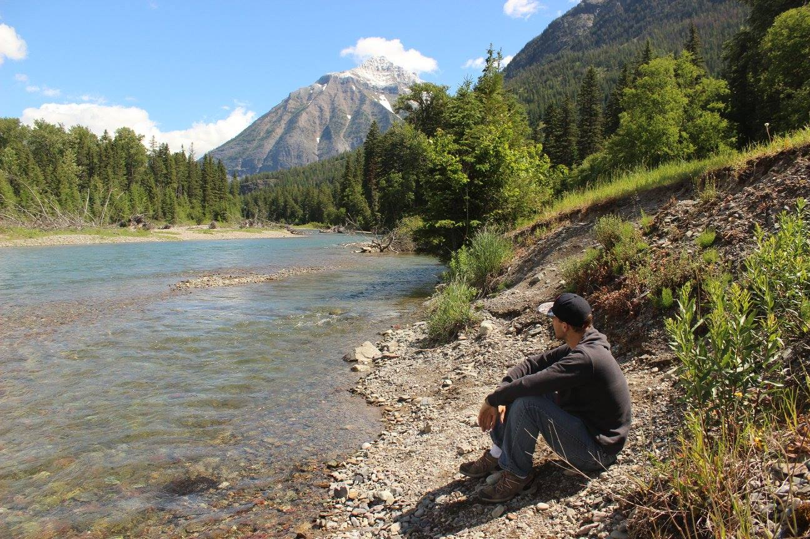

About Me

What can I say about myself? My passion for parks and recreation has shown in my academic, personal, and professional life. I have a batchelors degree in Recreation Parks and Tourism Administration. In 2016 I took a roadtrip around the western half of the U.S. and camped at 16 national parks. From January 1st 2016, to February 1st, 2019 I led outdoor adventure programs for schools all over the bay area. Although our programs were aimed towards teens, we also led a lot of team building programs for corporate adults.
I've always had a natural affinity for computers. I was opperating computers before I was 3 years old. Back then it was simply just to play my favorite games, but as the years went on I discovered several creative outlets including recording and editing videos, photoshop, and now coding.